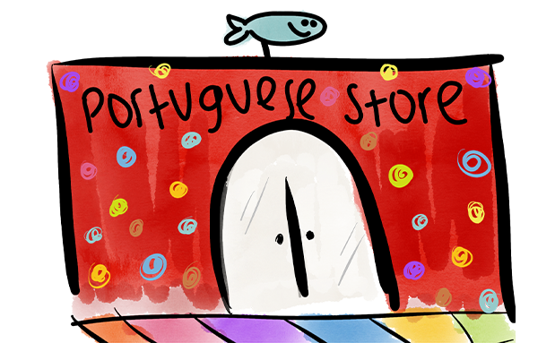

Now, Willy is the CFO of the Portuguese sardine store and lives in a luxurious room decorated with exquisite gold details and made of the finest aluminum possible. It's been 7 years since he embarked on this journey and took the risk, never returning to the waters of the coast. And now, he runs a big business.

Back